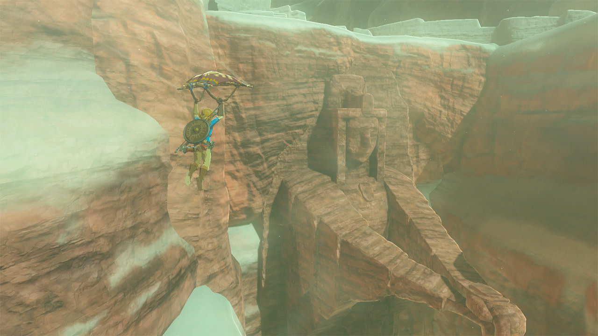
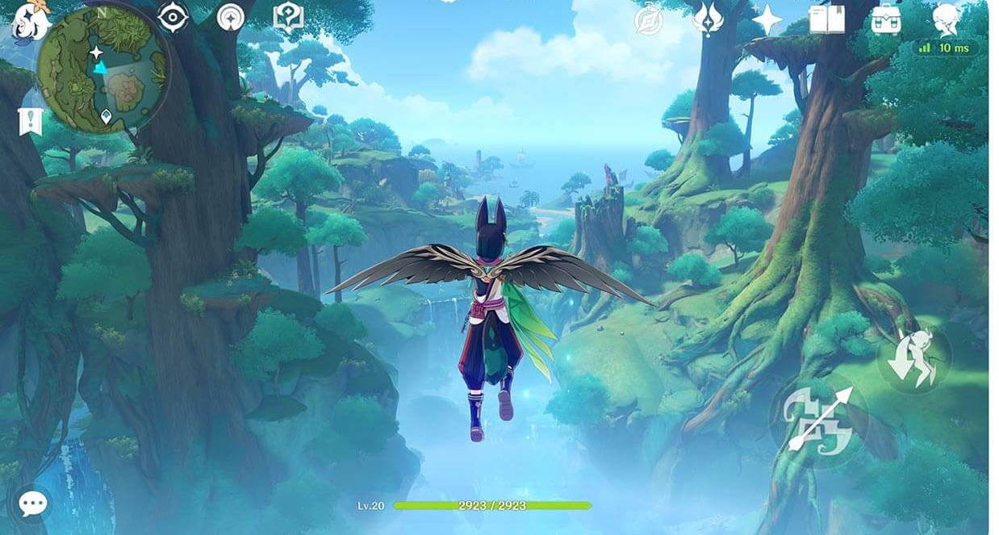
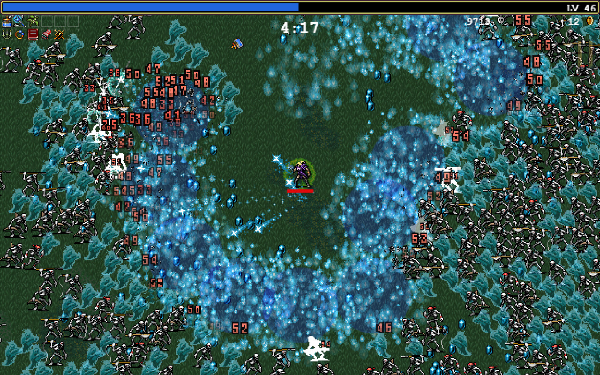
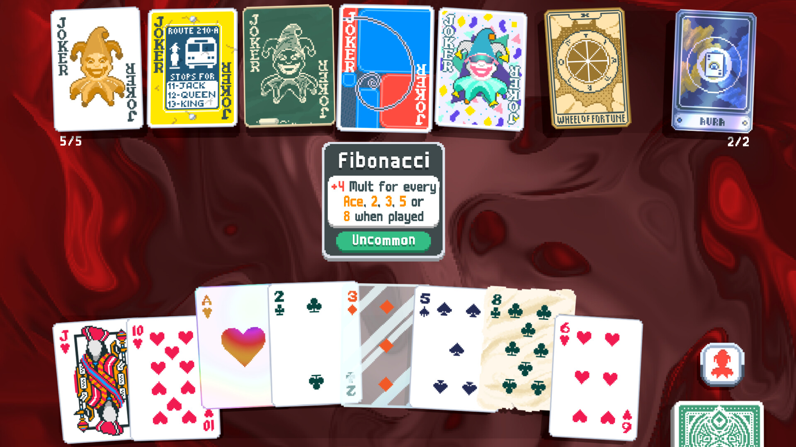

格律诗的棋局与 AI 时代的游戏生意
2026年09月09日 星期三前段时间重看了一遍《遥远的救世主》。看到格律诗音箱那盘棋的时候，脑子里冒出一个不太体面的念头：丁元英在九十年代末设计的那套打法，和今天独立开发者用 AI 在 Steam 上求生存的路数，算的似乎是同一本账。
所以这篇不是书评，是看完之后的一点胡思乱想。我想聊清楚三件事：格律诗模式到底是个什么结构；这套结构在今天的游戏行业怎么用；以及最重要的，为什么照着抄的人大概率会死。
一、格律诗是怎么赢的
先把小说里那盘棋拆开看。不是文学分析，是商业解剖。
第一步，把成本拆出去。格律诗自己不建工厂，让王庙村的农户以家庭作坊的形式做打磨、喷漆、组装。农户不签劳动合同、不上社保、不管环保，公司制生产被拆散成个体户采购，劳动力成本、合规成本、固定资产全部外部化。这一步是整盘棋的法律支点：生产主体是农户而不是格律诗，所以账面成本极低，低价销售不构成不正当竞争。丁元英算准了，乐圣起诉之后，法院调查的是格律诗公司的成本，而不是王庙村农户的生存状态。账做得干净，脏活都在账外。
第二步，低价打对方的核心利润区。格律诗以一对音箱 3400 元的价格在北京音响展上抛售。乐圣的音箱卖 8000 元，不是因为它值 8000，而是它的成本结构，研发、品牌、渠道、管理、合规，决定了它必须卖 8000 才能赚钱。不跟巨头拼品牌拼技术，拼的是成本结构本身。巨头的每一项合规、每一层管理、每一份财报，都是游击队可以瞄准的靶子。越正规，越挨打。
第三步，把官司变成广告。丁元英预判并且主动诱导乐圣起诉。他算准了林雨峰那种只有矛没有盾的性格一定会反击。被行业龙头起诉，媒体自然追；敢应诉、不怕查，反而向市场传递了成本真实的信号；等判决下来，市场教育和渠道铺设早就完成了。别人眼里的官司，在丁元英眼里是发布会，还是对方出钱办的。
第四步，用危机筛选股东。欧阳雪挂名大股东，叶晓明、刘冰、冯世杰做中小股东。乐圣起诉、公司面临 600 万赔偿的时候，叶刘冯恐慌退股，肖亚文逆势接盘。股权在这里是筛选器，不是奖品：平时谈理想都头头是道，只有真金白银可能归零的时刻，才能看出谁是创业者，谁是投机者。一场官司下来，股东名单比面试一百轮还干净。
第五步，信息差。从芮小丹开口要礼物那一刻起，丁元英已经把整盘棋算完了：王庙村能做什么、乐圣会怎么反应、法院会怎么判、每个人会在哪个节点做什么选择。他从不向任何人解释完整计划，只给每个人需要知道的部分。林雨峰以为自己在进攻，其实每一步都在别人的剧本里，连台词都是别人写好的。
五个动作串起来，其实就是一句话：极致的低成本结构，加上对规则和人心的事先计算，换来不对称的竞争优势。丁元英在五台山说，透视社会依次有三个层面：技术、制度、文化。这五个动作，就是把这三个层面挨个算穿之后的结果。
二、今天每个独立开发者手里都有一座王庙村
把这个框架搬到今天的游戏行业，对应关系清晰得让人不太舒服。
小团队的王庙村，就是 AI 工具链。美术外包给 GPT Image 2.5，帧动画交给 Seedance 2.5 和 MiniMax H3 抽帧，3D 模型找 Tripo，配音外包给语音合成，代码外包给 Claude Code 和 Codex。AI 不签劳动合同、不上社保、不要工位，比王庙村的农户还好说话，连工伤都不存在。格律诗把固定资产变成可变成本，独立开发者把一支三十人的团队变成一个人加一串 API 账单，逻辑是一样的。
这里要插一句我的态度。王庙村那套放到九十年代是规则缝隙，放到今天就是红线。真有创业者看了这篇，琢磨着不签劳动合同、不买社保、再顺手偷点税来压成本，那不叫学丁元英，那叫给自己攒案底，又蠢又坏。今天合法的"王庙村"是 AI 工具链：它不占工位、不缴社保，是因为它本来就不是人。占机器的便宜叫效率，占人的便宜叫剥削，这两件事别搞混。
大厂就是乐圣。腾讯、网易、米哈游的成本结构，决定了它们必须做大 DAU、长回收周期、低风险 IP 续作。它们有管理半径，有合规底线，有上市公司的财报压力。这些东西既是铠甲，也是盲区：有些缝隙市场，它们从结构上就没法进入。不是不想，是成本不允许。大厂的开会成本，可能比小团队的整个项目还贵。
技术、制度、文化这三层信息差，在 AI 游戏开发里也对应得很具体。
技术上，多数人还在用 AI 生成一张图，少数人已经在用 AI 生成整条美术管线：GPT Image 2.5 出概念图和风格锚点，Seedance 2.5、MiniMax H3 把静态角色图转成动作视频再抽帧去背，Tripo 直接把概念图抬成 3D 模型，批量产出风格统一的资产，成本再降一个数量级。前者叫用 AI，后者才叫用 AI 做生意。
制度上，Steam 的推荐算法、新品期流量倾斜、愿望单权重、各国对 AI 生成内容的监管差异，这些都是可以计算的东西。规则不只是用来遵守的，也是用来计算的。
文化上，玩家对服务型游戏已经疲劳，对 AI 生成的态度在从抵触转向接受，独立游戏的作者性正在回归。玩家愿意为一个人的想法付费。
三、三个已经打完的仗
这套东西是不是空想，看三个现实中的例子就知道了。
原神蹭塞尔达
2019 年 6 月 8 日，原神发布首个 PV，数小时内 B 站就有人做逐帧对比《旷野之息》的视频。6 月 25 日，米哈游发《致玩家的一封信》，不道歉，反而主动列出学习对象：任务系统向 B 社学习，随机事件向 GTA 学习，世界探索体验向 Botw 学习。这不是灭火，是浇油。8 月 ChinaJoy，有玩家举着 Switch 到索尼展台抗议，还有人当场砸了自己的 PS4，砸的是自己的机器，送的是米哈游的热度。2020 年 1 月，原神宣布登录 Switch，从抄袭者变成了任天堂平台上的一个作品，争议算是翻篇了。


当年逐帧对比最经典的素材，就是这两个滑翔镜头：构图、运镜、甚至主角张开的双臂，都像一个模子里出来的。骂战由它而起，流量也由它而起。
一家做过《崩坏 3》的中国公司，靠一场抄袭争议拿到了 3A 级别的全球关注度，这是多少广告预算都买不来的。丁元英诱导乐圣起诉，米哈游诱导全网对骂，动作是同一个，只是战场从音响展会搬到了互联网上。
更底层的是成本账。塞尔达触达一个用户，需要 60 美元加一台 Switch；原神触达一个用户，需要 0 美元加一部手机。米哈游不是在主机上做一个更好的塞尔达，那是找死；它是在手机上做一个足够像塞尔达的开放世界，把塞尔达验证过的体验，送到塞尔达永远触达不到的人群手里。玩法不受版权保护，这就是那个时代的法律缝隙。任天堂证明了这条路能走通，米哈游负责把路修到任天堂到不了的地方。
幻兽帕鲁对任天堂
这个案例比原神还像格律诗。
Pocketpair 是小团队，缝合怪属性本身就是营销武器。发售前，带枪宝可梦的梗图已经传遍全球；发售 24 小时销量破 200 万份，不到一周 Steam 同时在线峰值冲上 200 万，首月全平台玩家数破 2500 万。然后东半球最强法务部亲自下场起诉，等于免费给帕鲁做了全球头条广告：连任天堂都认证这游戏值得被起诉。这种背书，花钱都买不到。
法律缝隙也算得很准。角色形象的相似在司法实践中极难坐实，玩法机制不受版权保护，任天堂拿来起诉的三项专利，全是帕鲁发售后才针对性拆分出来的分案申请，根基不稳。Pocketpair 一边应诉一边发补丁，v0.3.11 删掉投掷帕鲁球召唤，后续更新又把帕鲁滑翔改成滑翔机，让任天堂指控的旧版本变成历史遗迹，想取证都得先考古。同时援引《怪物猎人》《方舟》这些先例，主张机制属于行业通用设计。最后日本特许厅以《方舟》等构成现有技术为由，驳回了任天堂一项关键分案申请；美国专利商标局也把任天堂一项关键申请里的 23 条权利要求驳掉了 22 条。
成本账更夸张。任天堂最新财年的财报里有一笔 64.14 亿日元的诉讼损失，占该财年特别损失的 96%；而帕鲁案打到现在，任天堂方主张的赔偿只有宝可梦、任天堂各 500 万，合计 1000 万日元。一边是一年 64 亿的法务开销，一边是 1000 万的索赔主张，这笔账的汇率比日元还难看。被起诉期间，Pocketpair 照常发动画短片、联动《泰拉瑞亚》、推进 1.0 正式版。你打你的，我做我的。这就是格律诗被起诉之后，欧阳雪和肖亚文稳如泰山的现实版。

麒麟游戏对搜狐畅游
先交代利益相关：麒麟游戏是我的前东家。所以这一段我尽量不吹不黑，只拆打法，反正官司已经是十几年前的公开往事了。
2007 年，尚进带着《天龙八部》的核心研发团队离开搜狐畅游，创办麒麟游戏。2009 年，畅游筹备纳斯达克分拆上市，《天龙八部》是唯一的利润支柱。就在这个当口，《成吉思汗》上线，而且尚进拒绝了畅游 CEO 王滔的代理提议。后面的故事，就很自然了。
2009 年 7 月 8 日畅游起诉，7 月 17 日《成吉思汗》公测，时间卡在公测前夜。意图很明显：阻击公测、阻击融资、阻击与搜狐和解。
诉讼请求更有意思：停止运营《成吉思汗》，在官网和《法制日报》公开道歉一个月，赔偿人民币一元。索赔 1 元不是开玩笑，是表态：这趟官司不为钱，为的就是在你敲锣打鼓的时候搅局。当然诉状里留了后手，保留追加更高金额赔偿的权利。等《成吉思汗》真的火了，这 1 元在两个月后被追加到 1906.3 万，成了 2009 年网游知识产权第一案。从 1 元到 1900 万，涨价速度比游戏里的装备还快。
麒麟 CTO 曾鹏翔后来的回应，我觉得是中国游戏史上最坦诚的公关话术：
“很意外他们真的起诉了，有点抬举我们，畅游太大，对我们这样一个小公司如此礼遇，业内少见！……这个误会‘有点美丽’，因为我们傍上了一个中国最大 IT 公司的影响力。只要你百度一下，畅游的新闻里总夹放着我们的名字，也不错。”
这话说得很不体面，但每个字都是实话。被巨头起诉，还能顺手把巨头的流量揣进自己兜里，这就是诉讼营销的精髓。
结果是用户增长远超预期，融资顺利完成，推广预算从 500 万追加到 5000 万。据说最终赔了两千万，和赚到的相比，不算多。
三个案例，公式是同一个：不在巨头的赛道上做得更好，而是在巨头不会进的赛道上，用巨头验证过的东西做饵，再把巨头的反击变成自己的免费广告。
四、泼一盆冷水
写到这里必须刹车。上面的分析有个致命问题：幸存者偏差。只看了活下来的格律诗，没看死掉的刘冰、叶晓明和林雨峰。
丁元英的模式从来不是稳健经营，是高杠杆的赌局。
先说刘冰。Steam 现在每天上架六七十款新游戏，其中大多数是刘冰：看到帕鲁缝合宝可梦火了，立刻用 AI 生成一堆带枪某某的换皮游戏，死；看到原神成功了，砸锅卖铁做二次元开放世界，死；看到吸血鬼幸存者创造了新品类，三个月跟风十款幸存者 like，九死一生。刘冰的死因不是笨，是贪婪加认知不配位。他以为靠上丁元英就能暴富，却没看懂这盘棋的入场费是什么。每个时代都不缺刘冰，缺的是替刘冰收尸的人。
再说叶晓明。他看懂了一半，但扛不住压力，乐圣一起诉他第一个退股。无数类似的尝试死在半途：争议一起来就删帖道歉，差评一刷屏就怀疑人生，律师函一到就连夜跑路。那三个案例能活，不是因为模式安全，而是操盘者在叶晓明时刻硬扛到底了。但硬扛是要本钱的：米哈游有《崩坏 3》的现金流，Pocketpair 有首月 2500 万玩家的收入打底，麒麟有尚进的行业声誉和融资能力。没有这些本钱的格律诗，第一个回合就死了，你只是没看到尸体。幸存者写的攻略，从来不包括火葬场的部分。
最后说林雨峰。被杀的巨头，代价也是真实的。瑞星被 360 的免费模式杀掉之后，周鸿祎也没变成救世主，免费杀毒后来长出了什么，大家都看到了。杀富济贫不是零和博弈，是负和博弈：格律诗赢了，林雨峰坠崖了。丁元英说大爱不爱，但他没说，这种大爱是有尸体的。
所以修正后的结论只有一句：杀富济贫不是商业模式，是生存策略。它只在九死一生的绝境里有价值，在稳健经营的场景里是毒药。
格律诗能活，是因为丁元英是丁元英：柏林私募基金的背景、韩楚风的资金、五台山论道后的心安、算准每一步的认知，缺一环就是另一个故事。对于每天面对 Steam 上六七十款新游戏的开发者来说，该问的不是我怎么杀富济贫，而是：我有没有丁元英的认知？有没有欧阳雪的资金？有没有肖亚文的魄力？如果都没有，那你不是格律诗，你是刘冰，拿着一张白纸，以为能敲诈世界。
五、当所有人都是格律诗
还有一层更残酷：当 AI 把门槛降到人人可用的时候，低成本本身就不再是优势，而是准入门槛。你不是在跟乐圣打，是在跟成千上万的格律诗互砍。人人都有王庙村，等于人人都没有王庙村。
竞争逻辑从成本结构不对称，变成了认知结构不对称。我觉得能活下来的大概只有四种人。
第一种，造品类的。不抢肉，造肉。《吸血鬼幸存者》一个人做出一个全新的子品类，跟风者涌入的时候，原创者已经握住了品类定义权。《潜水员戴夫》的潜水加寿司店组合，在它出现之前，没人知道自己想要这个。别问现在什么火，问两个不相关的玩法组合在一起，会不会有化学反应。

第二种，极端垂直的。大厂的成本结构决定它必须追求最大公约数，你的优势是最小公倍数。不试图让所有人喜欢，只让一小群人疯狂。《小丑牌》单人开发、无内购、无赛季，赚了数亿之后，开发者宣布回归爱好者节奏。在一个所有大厂都在做长线运营的时代，反 GaaS 本身就是一种差异化。

第三种，拼执行速度的。创意不值钱，速度才值钱。三个月法则：第一个月做可玩的垂直切片，第二个月按社区反馈迭代，第三个月上抢先体验。超过三个月，你的创意大概率已经被另一个格律诗实现了。你的想法不值钱，你的想法加快递才值钱。
第四种，经营社群的。把开发过程本身变成内容。每周的 Devlog 不写本周修复了什么 Bug，写我用 AI 生成了一百个 NPC，其中一个长得像我前女友。在格律诗的海洋里，你是谁，比你的游戏是什么更重要。AI 能抄走你的玩法，抄不走你的前女友。
至于 AI slop 的骂名，反制方法不是辩解，是让骂名失效：透明但坦然地标注 AI 的使用方式，把重点放在我怎么用，而不是我用没用；用统一的风格锁定，把品质做到这居然是 AI 做的的水平；定价 38 到 68 元而不是 6 元，价格本身就是品质声明；最好直接定义一个新品类标签，当规则的定义者，而不是被审判者。帕鲁被叫缝合怪，卖了 2500 万份；原神被叫抄袭，赚了数百亿。骂名是弱者的审判，销量是强者的回答。
尾声
小说里最狠的一笔，是丁元英算到了商业的每一步，却算不到芮小丹的死。规律可以解释商业，解释不了人的自性和无常。这个框架事后解释力很强，事前预测力有限：我们能解释原神、帕鲁、麒麟为什么活了，但预测不了下一个用同样模式的人是生是死（麒麟后来基本挂了）。
丁元英在五台山问过自己：杀富济贫，破坏性开采市场资源，让农民扒着井沿看一眼再掉下去，会不会让他们患上精神绝症？他知道自己做的是破坏性的事。
说到这里，我想补一个真实世界的后续，比小说还小说。前面说的那个在公测前夜起诉麒麟、索赔一元的畅游 CEO 王滔，后来笃信了印度的合一教。这个教的核心教义是，神是自己的内在大我，只要不断修炼，人人可以成神。据公开报道，他在畅游成立了内在工程部，要求员工觉醒，办了一本叫《荷之光》的刊物，送管理层去印度灵修，高级课程十万美元起步，最后自认已然成神，站在更高境界俯瞰万物。2014 年，他在内部斗争中出局，被董事会罢免。神也没能通过董事会这关。丁元英担心王庙村的农民扒着井沿看一眼再掉下去会得精神绝症，现实里真得了这病的，是井沿上面那位。丁元英说神即道，道是规律，谁也不能占有，所以他拒绝被神化；合一教说神就是你自己，修炼到位你就是神，于是王滔真诚地坐上了神位。把自己当救世主，走到头不是等靠要，是自己成神，然后等别人来跪拜。
所以这篇胡思乱想的最后，没有致富经，只有一把尺子：那个大厂不敢停的 GaaS、不敢做的粗糙画面、不敢降到的价格、不敢进入的垂直题材，那里才有你的王庙村。找到之后先问自己三个问题：我算准它的反击了吗？我有硬扛的本钱吗？我输得起吗？三个答案都是有，那是你的乐圣；有一个没有，今天先别杀富，先种地。
最后还想驳一驳小说那句最著名的口号。它的矛头指向一个靠字：等靠要、破格获取、把命运外包给青天大老爷。这层批判我同意。指望 Steam 赏流量、指望 AI 自动生爆款、指望投资人垂青，那不是信心，是懒惰，是刘冰手里那张白纸。
但作为世界观，这句话连小说自己都把自己驳倒了。想靠自己成救世主的人，全书死干净了：林雨峰死于只能赢，刘冰死于破格获取，而算无遗策的丁元英，连最想救的人都救不了。如果人真能自救，这本书该叫《救世主在人间》，而不是《遥远的救世主》。遥远两个字恰恰是小说的诚实：它画到了人的尽头，然后停笔。规律能赢下官司，赢不下林雨峰坠崖前的那一脚油门；能把生意做好，不能把人做好。
落到做游戏上，结论两头都要锋利。别等救主式的外部力量，平台不是、资本不是、AI 更不是，那是懒惰；也别把自己当救世主，那是狂妄，书里书外，每个狂妄的人都有名字和悬崖，林雨峰的悬崖在山道上，王滔的悬崖在他自己封的神位上。中间那条路很朴素：把格律诗的棋算到最精，然后尽人事，知天命，把结果交给比棋盘更大的那位。
丁元英只差一步：他看清了靠是病，却开错了药方，把不靠任何人，写成了没有人可靠。
不过话说回来，按今天互联网的分类法，丁元英这种不社交、不解释、不依附任何人、一个人躲在古城里听唱片顺便下一盘大棋的活法，简直就是西格玛男人的祖师爷。一本讨论文化属性的严肃小说（算是吧，不够仙就是了），最后给互联网贡献了一个 meme 素材，也不知道作者豆豆当年有没有算到这一步🤦